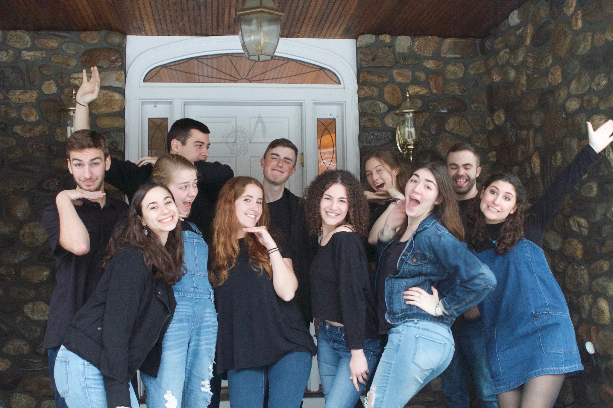

I am an Alto in Tufts' Only Coed Jewish A Cappella group (believe it or not!). As a sophomore I led as Music Director and this coming year will lead as MD again. This job included leading rehearsal seven hours per week, running the audition/callback process both semesters, arranging music for the group, and finally producing our most recent album, "Perspective"! I will be working on producing our second album this summer.
All of the music we sing has some kind of Jewish significance; we sing in many languages including English, Ladino, Yemenite Arabic, Portuguese, Russian, Yiddish, and now Amharic. I love spending time every week making music with this lovely group of people. As a music nerd, I must say that making harmony is simply one of the more beautiful things in life.
Some solos and duets: Like the Dawn, Ana El Na, Ivdu Et Hashem B'Simcha
Arrangements for the group: Yo M'enamori, Romemu, Meah Chuz Or
For over a year now, I have been a vocalist in one of Tufts' Jazz Improv Combos. With an amazing professor Nando Michelin, I've learned a lot about making melodies your own, creating new arrangements, and not being afraid to try something new.
I have been classically trained on the piano since I was five years-old. Some of my favorite pieces to play include:
More recently, I switched over to jazz piano and have picked up a bunch of beautiful songs:
For three semesters now, my friend Jacob and I have had fun playing music and chatting on our radio show called "Over Easy". Naturall, we love music and brunch. Check us out at 91.5 WMFO or see more on our Facebook page.
This semester I became more involved with Studio B and Studio D where you can set-up bands or musicians with microphones and amps. I learned how to use the sound board so their music can be played live on a show, or recorded into what could be their future EP!